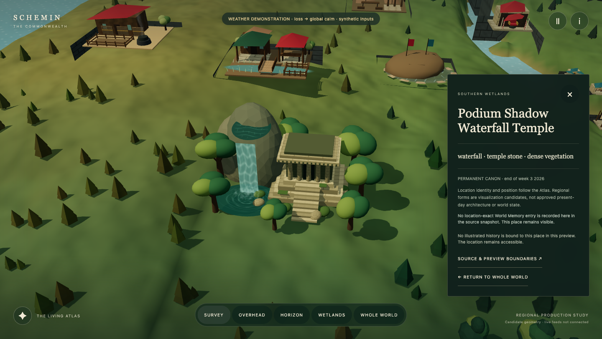
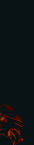

Podium Shadow Waterfall Temple

33 / 4,930Water-region pixels with average RGB delta greater than 12
0Changed pixels in nearby stable-control rectangle
0Changed pixels in water rectangle under explicit pause

Zoomed pixel difference
Displayed at native region resolution with nearest-neighbor enlargement. Amber marks RGB variation between original frames; dark areas have no or negligible change. The heatmap is derived from immutable source screenshots, not a third synthetic rendering.


Capture source 0736e071e4fcd3c70deea60e565293ccfde2230b, historic end_of_week_3_2026; screenshot authority and SHA-256 are in the original capture manifest. Derived pixel metrics, ROI coordinates and PNG hashes are in the diagnostic manifest. No public release, new topology, live weather feed, principal characters, credentials, paid API or publication authorization.